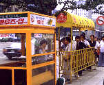

呂清夫 撰文

在台灣，不僅機車騎士要戴安全帽，其實更需要戴安全帽的是行人，因為行人在馬路上無法免於被撞的恐懼，連斑馬線都無法建立權威，導演屠忠訓就是命喪斑馬線上。在台北，交通是都市人的惡夢之一，對於弱勢的婦女與小孩尤其不公平，因為台灣的交通設施並未考慮步行的空間，可以說一切向車看，強權即公理。據報載，台北的大街小巷如果在沒有樹立限速標誌的地方，可以開快到時速四十公里，據說有的開車族還不滿意，希望調到五十公里。其實在小巷之中，四十公里已經等於飆車了，難怪機車族可以橫衝直撞，如入無人之境。但是行人則可能被嚇得雞飛狗跳，當汽車突來一聲大喇叭，或當一部機車從背後飛奔而過以後，行人們不是已經魂飛天外，就是慶幸自己老命還在。從前有美學家勸人走在路上的時候要「慢慢走，欣賞啊！」這句話如果用在今天的台北，恐怕是跟自己的生命開玩笑。這使我想起世界各地的城市，他們的開車族都沒有我們「神勇」，卻多的是「膽小鬼」。記得有一次夜間，在德國的小城曼罕散步，在四下無人的一條小路邊，遠遠看到一個紅綠燈，心想這樣的紅綠燈有效嗎？果然不久就來了一部車子，眼看著它竟然乖乖的停了下來，再等下一部車子也是一樣，好像每個司機心中都有一個警察。又有一年暑假在美西前往大峽谷的路上，經過一個沙漠地帶，數里之內不見人煙，所以車子真是進入了無人之境，不過竟有一部車子在經過一所小學的時候，車子居然開得比走路還慢，簡直像蝸牛爬行，而那所學校大概因為暑假並無任何學生出入，只見校門口站立著一個限速記得是五公里的交通標誌。對比之下，台灣的愛心媽媽在校門口維持交通秩序時，竟然時常會跟開車族起衝突，校門口也難得看到「禁聲慢行」的交通標誌。又有一次夜間在漢城搭計程車回旅館，明明已經到達目的地了，但是司機硬是不停車，非要開到離旅館約廿公尺的地方才停不可，我問其故，司機說有站才能停，計程車也要靠站停車，不能亂停。第二天我再注意一下漢城街頭，果然確實有很多候車亭，但不是為公車而設，而是計程車候車用的（見上圖），也就是說，在漢城的計程車並不讓你招之即來，所以跟搭公車沒什麼兩樣，大家也都習慣成自然。在東京，馬路可說是小鼻子小眼睛，但是照樣勻出人行步道，步道旁邊都有欄杆，人車井水不犯河水，行人毫無「後顧」之憂。至於開車如果撞到人，那你就要賠錢賠一輩子，簡直跟賠命差不多，所以大家不敢亂開車。不僅此也，東京到處可以看到交通標語､標誌，例如「禮讓可使馬路變寬」便是最常見的標語，又如「謹防小孩衝出來」則是各個巷口最常見的交通標誌，上面還畫著小孩繃繃跳跳的圖樣。這些標語､標誌花費不多，但是需要一點關懷與巧思，可讓市民潛移默化。台灣這方面可以說太缺少了，是不為也，非不能也，其實交通標語､標誌､車阻､候車亭､人行步道都是街頭傢具，它是公共藝術裡面明訂的重頭戲，好的街頭傢具不但是欣賞的對象，同時也能讓民眾「慢慢走，欣賞啊！」。
原載1999.5.22.中央日報